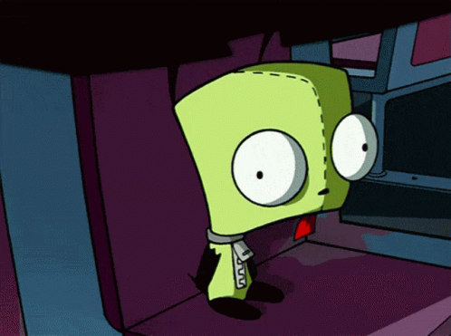

under construction!

what is this, anyways?
thank you for asking! or looking, at least! squick is a love2d project being maintained by me, addilyz! or addilyn mcAllister, if you'd like!
squick is all about giving back to the community in the same way it's given to me over the years! if i was writing stuff without putting it out there for other developers to use, who would i even be?
squick is my current flagship toolkit and all of the modules i use to start development of any title i make! if you want you could probably try to race me to make a game once a project's toolkits are done, aha! ^-^ i try to name them after the genre and include multiple options for certain things to make them as non-opinionated as possible! for example, if someday i say i have platforming fully available, it would come with a precise collision option, a tiled option *and* a love.physics option!
however, the bad news is i need to eat too. if you like my work please hire me freelance my schedule can be made open to any fitting offer currently.